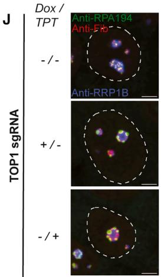
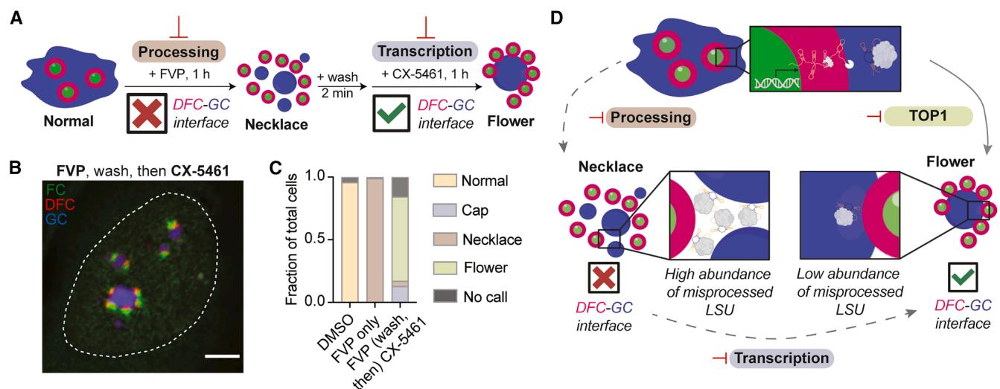

一句话定位#
这篇论文提出 Deep-Phase，用深度学习从显微图像中定量解码生物分子凝聚体形态，并把核仁、核斑和病毒包涵体的形态变化连接到 RNA 转录、加工和核仁亚区组织等功能扰动。
放入知识库的位置#
- 来源层级：文献 / Sources / Papers
- 主题连接：生物分子凝聚体、核仁、rRNA加工、表型图像分析、深度学习、虚拟细胞 细胞扰动
- 可提升到
Knowledge/的候选概念：凝聚体形态作为功能扰动读出、Deep-Phase、TOP1-rRNA加工-核仁组织、图像表型到分子机制映射
研究问题#
作者想解决的问题是：细胞内无膜凝聚体的中尺度形态是否可以作为可量化读出，用来反推出其背后的分子功能扰动。传统上，凝聚体研究常能描述相分离、组分和形态，但很难把显微尺度形态变化系统地连接到 RNA 转录、rRNA 加工、核仁亚区边界维持等具体生化过程。
核心结论#
Deep-Phase 可以直接从原始显微图像中学习凝聚体形态表征，并用 activation space 和剂量反应分析把形态变化转化为功能扰动强度。模型不仅能区分核仁中由 RNA Pol I 抑制、CDK/RNA Pol II 相关扰动和 TOP1 抑制造成的不同形态，还能扩展到核斑和 RSV 病毒包涵体，说明凝聚体形态可以作为跨结构、跨细胞过程的功能读出。
最重要的生物学发现是：化学筛选发现 TOP1 抑制会产生一种独特的核仁 flower morphology。后续机制实验显示，TOP1 影响 rRNA 加工和 LSU 相关 pre-rRNA 中间体丰度，进而影响 DFC-GC 界面和核仁多相组织。也就是说，这篇论文不只是做了一个图像分类器，而是用图像表型发现并解释了一个此前未充分认识的 TOP1-核仁组织连接。
方法路线#
| 步骤 | 做法 | 用途 |
|---|---|---|
| 凝聚体标记 | 在 U2OS 细胞中标记核仁 FC、DFC、GC 三个亚区；也测试核斑和 RSV inclusion bodies | 让模型看到不同凝聚体形态层级 |
| 已知扰动建模 | 用 CX-5461、FVP、Plad B、CPM、TPT/CPT 等药物产生可解释的形态状态 | 用已知功能扰动定义训练标签和校准空间 |
| CNN/ResNet 迁移学习 | 用 ImageNet 初始化并端到端微调 ResNet50 等 CNN | 从原始图像学习形态特征，减少手工分割依赖 |
| Activation space | 在最终分类层前加入二维编码层，把单细胞映射到 2D 形态空间 | 可视化和量化细胞群体形态变化 |
| 剂量反应曲线 | 用形态向量投影计算 RC50，并与功能 IC50 比较 | 检验形态读出是否反映功能扰动强度 |
| 化学筛选 | 用 Deep-Phase 识别已知类别外的核仁形态 | 发现 TOP1 抑制相关 flower morphology |
| 机制验证 | TOP1 定位、5eU-seq、RNA FISH、顺序药物处理 | 解释 flower morphology 与 rRNA 加工/DFC-GC 界面之间的关系 |
Key Claims#
Claim: Deep-Phase 能把凝聚体显微形态定量转化为功能扰动读出。
- Evidence: 核仁模型在已知核仁扰动类别上达到高分类准确率；核斑和 RSV inclusion body 的 RC50 与功能 IC50 接近。
- Method: ResNet 迁移学习、二维 activation space、剂量反应曲线和向量投影。
- Limitation: 该读出依赖已定义的形态锚点；遇到未见过的新形态时，需要扩展训练类别或进行正交验证。
- Project relevance: 对“虚拟细胞/细胞扰动”方向有价值，可作为从图像表型推断细胞状态或药物机制的范例。
Claim: 相比基于 CellProfiler 的手工特征，Deep-Phase 更适合处理复杂凝聚体形态和跨批次扰动。
- Evidence: 手工分割特征在核仁/核斑上能部分复现，但在 RSV inclusion bodies 上难以可靠分离，并且在跨批次或训练集外处理上容易出现 no-call。
- Method: 直接输入原始图像，通过卷积表征学习弱化阈值、染色、照明和分割误差。
- Limitation: 深度模型本身仍需足够覆盖形态空间的训练数据，并不自动保证机制可解释性。
- Project relevance: 可作为比较“传统图像组学特征 vs 深度表征”的方法案例。
Claim: TOP1 抑制诱导的 flower morphology 指向 TOP1 在核仁完整性和 rRNA 加工中的作用。
- Evidence: TPT 和 CPT 等 TOP1 抑制剂产生相似 flower morphology；TOP2 抑制剂 MTX 更接近 cap morphology；flower RC50 与 TOP1 核仁分布降低的浓度范围接近。
- Method: 药物比较、TOP1 定位定量、扩展四类核仁形态网络。
- Limitation: TOP1 抑制产生的效应可能包含转录、DNA 拓扑、rRNA 加工和药物特异性影响，需要依赖后续机制实验拆解。
- Project relevance: 说明图像筛选不仅能分类表型，也能产生可追踪的机制假说。
Claim: 核仁 flower 与 necklace 等形态差异可能由 rRNA precursor 的身份、定位和丰度决定。
- Evidence: TPT 导致 47S pre-rRNA 多个内部切割位点加工缺陷，尤其影响中后期核糖体装配；RNA FISH 和 5eU-seq 显示 LSU 相关中间体在 TPT 与 FVP 条件下定位/丰度不同；FVP 后接 CX-5461 的顺序处理可恢复类似 flower 的形态。
- Method: 5eU-seq、RNA FISH、药物顺序扰动、核仁网络分类。
- Limitation: 作者提出 LSU-containing precursor 的减少可能来自 rDNA 3' 端转录不完整或选择性降解，二者尚未完全区分。
- Project relevance: 是“形态空间 - RNA 加工中间体 - 细胞器亚区边界”三者连接的强案例。
关键证据索引#
| 证据 | 说明 | 对应结论 |
|---|---|---|
| Figure 1 | 三色核仁模型，训练 Deep-Phase 区分正常、cap、necklace 等形态 | 核仁形态能反映不同 ribosome biogenesis 扰动 |
| Figure 3 | 核斑和 RSV inclusion body 扩展实验 | Deep-Phase 不限于核仁，可跨凝聚体应用 |
| Figure S3 / Tables S1-S4 | 与 CellProfiler/随机森林和功能 IC50 的比较 | 深度学习表征比手工特征更稳健 |
| Figure 5 | TPT/CPT/MTX 比较，TOP1 定位与 flower RC50 对应 | TOP1 缺失/重定位驱动 flower morphology |
| Figure 6 | 5eU-seq 与 RNA FISH 检测 rRNA 加工和 LSU precursor | TOP1 与 rRNA 中后期加工、LSU precursor 丰度相关 |
| Figure 7 | FVP 后接 CX-5461 顺序扰动重现 flower-like 形态 | DFC-GC 界面依赖 rRNA precursor 的身份和丰度 |
关键图#

**Figure 5**｜TOP1 抑制诱导核仁 flower morphology。TPT/CPT（TOP1 抑制剂）产生独特的花样形态，而 TOP2 抑制剂 MTX 更接近 cap morphology；flower 形态的 RC50 与 TOP1 核仁定位下降的浓度范围一致，提示 TOP1 缺失/重定位驱动该形态。
**Figure 7**｜rRNA precursor 的身份与丰度决定核仁 DFC-GC 界面组织模型。FVP（rRNA 加工抑制）后接 CX-5461（RNA Pol I 抑制）的顺序扰动，可通过降低异常 pre-rRNA 中间体积累，重现 flower-like 形态，支持"rRNA 加工状态 → 核仁多相组织"的机制模型。机制模型#
正常核仁中，FC、DFC 和 GC 形成有组织的多相结构。FVP 等处理造成 rRNA 加工缺陷，并使部分 LSU-forming precursor 错误积累或定位异常，DFC-GC 界面被破坏，表现为 necklace morphology。TOP1 抑制则造成另一类 rRNA processing/abundance 状态：late-stage LSU 相关中间体减少或保留方式不同，使 DFC-GC 界面以 flower morphology 的形式维持或重组。作者通过 FVP 后接 CX-5461 降低异常中间体积累，进一步支持“rRNA precursor 的身份和丰度决定核仁相组织”的模型。
方法学价值#
- 把图像表型从“描述性形态”推进到“可量化功能读出”。
- 提供了从已知扰动定义形态空间，再用未知扰动发现新机制的流程。
- 适合与药物筛选、CRISPR perturbation、Cell Painting、多组学 readout 结合。
- 对虚拟细胞建模有启发：细胞状态不一定只能由转录组表示，细胞器/凝聚体中尺度形态也可以作为状态变量。
局限与注意#
- Deep-Phase 的解释力依赖训练形态类别。如果训练类别太少，新表型可能被吸收到已有类别或落入模糊 no-call。
- 药物扰动存在 off-target 和时间/剂量依赖效应，单靠图像分类不能直接证明机制，需要 5eU-seq、RNA FISH、定位实验等验证。
- TOP1 相关机制仍有未拆开的环节：LSU-containing pre-rRNA 减少可能来自 rDNA 3' 端转录不完整，也可能来自选择性降解。
- 跨细胞系、跨标记方式虽有验证，但若迁移到新实验体系，仍需要重新校准形态锚点和批次效应。
与现有知识的连接#
- Cell Painting：同样从细胞图像中提取扰动表型，但本研究更聚焦凝聚体和核仁亚区结构。
- Perturb-seq：Perturb-seq 主要从转录组读出扰动；Deep-Phase 提供形态读出，可互补。
- 核仁：本文把核仁视作多相凝聚体，并强调 FC/DFC/GC 界面由 rRNA 加工状态维持。
- rRNA加工：rRNA precursor 的加工、定位和丰度不仅是分子事件，也能改变核仁中尺度结构。
- TOP1：除 DNA 拓扑和转录相关作用外，本文强调 TOP1 与 rRNA processing 和 nucleolar integrity 的联系。
可复用的研究设计模板#
- 选一个有明确空间结构的细胞器或凝聚体。
- 用机制已知的扰动建立几个稳定形态锚点。
- 用深度模型学习单细胞形态空间，而不是只依赖手工分割特征。
- 用剂量反应和功能 readout 校准形态变化是否有生物学含义。
- 在筛选中寻找偏离已知形态空间的新状态。
- 用正交实验验证新状态背后的机制。
待追问#
- Deep-Phase 的 activation space 能否与单细胞转录组、Perturb-seq 或 Cell Painting embedding 做联合表示？
- 如果把输入换成普通高内涵成像或组织切片图像，是否仍能稳定学习类似的“功能形态轴”？
- TOP1-rRNA 加工机制中，LSU precursor 减少到底主要来自 rDNA 转录延伸受阻还是 RNA 降解？
- 对用户当前“虚拟细胞/细胞扰动”方向，是否可以把凝聚体形态 embedding 作为扰动响应预测模型的一个中间表征？
引用#
Donlic, A., Comi, T. J., Quinodoz, S. A., Jaberi-Lashkari, N., Fernandes, K. A., Jiang, L., Wiesner, L. W., Lim, A. I., & Brangwynne, C. P. (2026). Deep learning of functional perturbations from condensate morphology. Cell. https://doi.org/10.1016/j.cell.2026.05.010